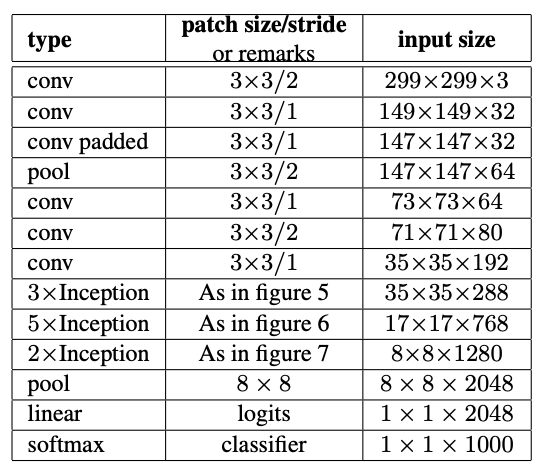
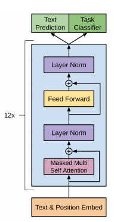

Machine Learning Engineering
Module 0.2
Models and Modules
Class Note
You need to link your GitHub account
Still 9 students with unlinked accounts
Outline
Modules
Visualization
Datasets
Modules
Image Models

Image Recognition

Text Generation
Text Generation

Model
For our purposes, a model is a parameterized function.
Initial Focus
Parameters
Model is just code.
Parameters are everything that you learned.
Modern parameters sets are both:
Large
Complex
Growth in Parameter Size

(I have to update this graph every year)
Complex
Inception - Table of precise sizes
{kind=link}
Specifying Parameters
Datastructures to specify parameters
Requirements
Independent of implementation
Compositional
Data Structure
Torch choice - Module Trees
Each Module owns a set of parameters
Each Module has submodules that own parameters
Module Trees
Benefits
Can extract all parameters without knowing about Modules
Can use mix and match Modules for different tasks
Downsides
Verbose, repeats some functionality of declaration and use.
Module Storage
Stores three things:
Parameters
Submodules
Generic Python attributes
Parameters
Everything that is learned in the model
Controlled and changed outside the class
Submodules
Other modules that are called
Store their own parameters and submodules
Together forms a tree
Everything Else
Modules act mostly like standard python objects
You can have additional information stored
Module Example
Simple
class MyModule(minitorch.Module):
def __init__(self, arg):
super().__init__()
self.parameter1 = Parameter(15)
self.data = 25
self.sub_module = OtherModule(arg, arg+10)How does this work?
Internally
Modulespies to findParameterandModuleobjectsA list is stored internally.
Implemented through Python magic methods
Detail: Magic Methods
Any method that starts and ends with __
Used to override default behavior of the language.
We will use for many things, including operator overloading
Interception Code
Module construction
def __setattr__(self, key, val):
if isinstance(val, Parameter):
self.__dict__["_parameters"][key] = val
elif isinstance(val, Module):
self.__dict__["_modules"][key] = val
else:
super().__setattr__(key, val)All subclasses must begin their initialization by calling
super().__init__()Module Example
Modules
class Module1(minitorch.Module):
def __init__(self):
super().__init__()
self.p1 = Parameter(5)
self.a = Module2()
self.b = Module3()
class Module2(Module):
def __init__(self):
super().__init__()
self.p2 = Parameter(10)
class Module3(Module):
def __init__(self):
super().__init__()
self.c = Module4()
class Module4(Module):
def __init__(self):
super().__init__()
self.p3 = Parameter(15)Parameter Naming
Every parameter in a model has a unique name.
Naming is determined by walking the tree.
Names are prefixed by the path from the root.
Module Naming

Other Module Metadata
Other information can be communicated through the tree.
Common example: Is the model in train or test mode?
Homework Note
Must be recursive implementation
Have to walk the full tree
(Companies love this as an interview question!)
Real World Examples
Diagram from GPT (You shouldn't know this yet.. )
Real World Examples
class Block(nn.Module):
def __init__(self, n_ctx, config, scale=False):
super().__init__()
hidden_size = config.n_embd
inner_dim = config.n_inner if config.n_inner is not None else 4 * hidden_size
self.ln_1 = nn.LayerNorm(hidden_size, eps=config.layer_norm_epsilon)
self.attn = Attention(hidden_size, n_ctx, config, scale)
self.ln_2 = nn.LayerNorm(hidden_size, eps=config.layer_norm_epsilon)
if config.add_cross_attention:
self.crossattention = Attention(hidden_size, n_ctx, config, scale, is_cross_attention=True)
self.ln_cross_attn = nn.LayerNorm(hidden_size, eps=config.layer_norm_epsilon)
self.mlp = MLP(inner_dim, config)Real World Examples
Tabular style description:
Real World Examples
class Inception3(nn.Module):
def __init__(self, num_classes=1000, aux_logits=True, transform_input=False,
inception_blocks=None, init_weights=None):
super(Inception3, self).__init__()
...
self.aux_logits = aux_logits
self.transform_input = transform_input
self.Conv2d_1a_3x3 = conv_block(3, 32, kernel_size=3, stride=2)
self.Conv2d_2a_3x3 = conv_block(32, 32, kernel_size=3)
self.Conv2d_2b_3x3 = conv_block(32, 64, kernel_size=3, padding=1)
self.maxpool1 = nn.MaxPool2d(kernel_size=3, stride=2)
self.Conv2d_3b_1x1 = conv_block(64, 80, kernel_size=1)
self.Conv2d_4a_3x3 = conv_block(80, 192, kernel_size=3)
self.maxpool2 = nn.MaxPool2d(kernel_size=3, stride=2)
self.Mixed_5b = inception_a(192, pool_features=32)
self.Mixed_5c = inception_a(256, pool_features=64)
self.Mixed_5d = inception_a(288, pool_features=64)
self.Mixed_6a = inception_b(288)
self.Mixed_6b = inception_c(768, channels_7x7=128)
self.Mixed_6c = inception_c(768, channels_7x7=160)
self.Mixed_6d = inception_c(768, channels_7x7=160)
self.Mixed_6e = inception_c(768, channels_7x7=192)
if aux_logits:
self.AuxLogits = inception_aux(768, num_classes)
self.Mixed_7a = inception_d(768)
self.Mixed_7b = inception_e(1280)
self.Mixed_7c = inception_e(2048)
self.avgpool = nn.AdaptiveAvgPool2d((1, 1))
self.dropout = nn.Dropout()
self.fc = nn.Linear(2048, num_classes)Visualization
Main Idea
Show properties of your model as you code
See real time graphs as you train models
Make convincing figures of your full system
Library: Streamlit
Easy to use Python GUI
>>> streamlit run app.py -- 0Code Snippet
Streamlit windows
import streamlit as st
st.write("## Sandbox for Model Training")
...
st.plotly_chart(fig)Gotchas
Changes to the visualization code will autoupdate
Changes to the library will not autoupdate
Other Options
Many other ML tailored options
Tensorboard
Hosted services: Weights and Biases, Comet
Datasets
Sneak Preview
Task 0.5: Intro to our first ML problem
Basic separation of points on a graph
Manual classifier
Datasets
Simple
Diag
Split
Xor
Parameter Knobs
W1
W2
Bias